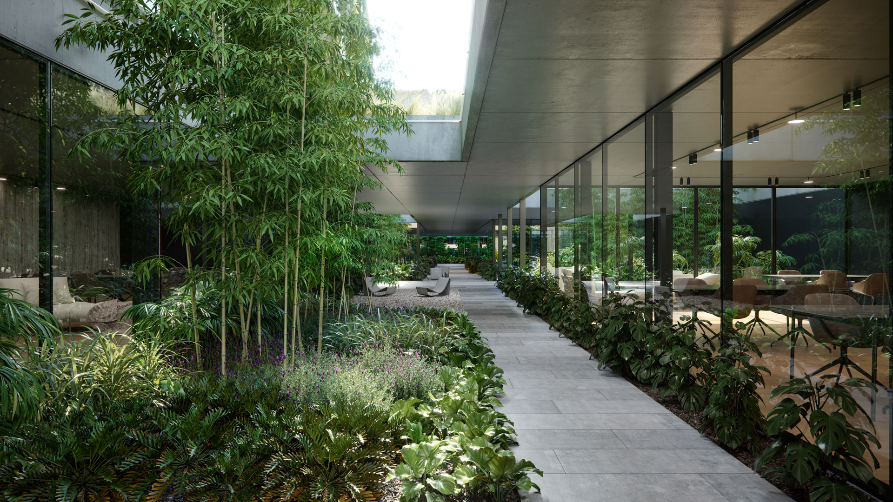

Casa Roca
La residencia Casa Roca se encuentra en la Barranca de Vicente López, en la provincia de Buenos Aires, sobre un terreno de 705 metros cuadrados con un amplio frente de 31 metros y poca profundidad, un factor que se tuvo en cuenta en el estudio de la iluminación solar.
